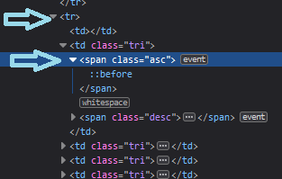

- Mise en jambe
-
Une fois le tableau construit par le navigateur, marquez toute les notes en dessous de 10
-
De même, calculez les moyennes, par colonne, puis en regroupant les colonnes associées
-
- Manipulation structure
domNous allons manipuler la structure d'un tableau pour transformer sa présentation : d'une classique, adaptée à un écran d'ordinateur, vers une autre plus fine, adaptée à un écran de téléphone. Avant cela, nous avons un peu simplifier le tableau (attention, cette simplification réduit le travail de la callback qui calcule les moyennes, et peu impacter vos précédents sélecteurs)
Notre point de départ est maintenant un tableau 2D classique :
theadettfootn'ont plus qu'une ligne chacun, ettbodyest rectangulaireLa présentation smartphone que nous allons créer se fait sur deux colonnes seulement, de façon à tenir sur un écran de faible largeur. La première colonne répète périodiquement les noms de colonnes du tableau d'origine (les disciplines), pendant que la seconde colonne affiche les lignes du tableau d'origine (les notes des magiciens) les unes après les autres.
Pour aider la lecture, l'alternance de niveau d'ombre rajouté dans la seconde présentation correspond aux changements de ligne dans le tableau d'origine (utilisez par exemple
filter: invert(0.1);)Pour l'instant nous laissons de coté les noms des magiciens contenus dans la première colonne du tableau d'origine, ainsi que les moyennes indiquées dans
tfoot. Une partie optionnelle vous invitera à les inclure dans le traitement.-
Sous le tableau, rajoutez un bouton pour permettre l'invocation de la fonction
table_to_mobileet un autre pourtable_to_desktopAvant de procéder à la transformation du tableau, nous allons commencer par extraire l'information qu'il contient. Nous stockerons cette information dans une variable qui jouera pour nous le rôle du modèle. En clair, nous voulons obtenir quelquechose qui ressemble à ceci :
{ "colonnes":[ "Autodiscipline", "Elementalisme", "Naturalisme", "Divination", "Prètrise", "Altération", "Conscience", "Guerrier", "Artisant" ], "lignes":[ [ "8", "5", "5", "7","12","14", "6","18","11"], [ "5","16", "9", "8","12", "5", "7","10","18"], ["10", "6","15", "7","14","11","17","15","14"], ["12","11","15", "7","14","11","17", "5", "5"], ["13","14","12","12", "7","14", "9", "9","18"], [ "5","13","18", "5","17","14","18","14","15"], ["18","14","12","18","15","12","15", "7","11"], ["13","15","16", "8","15", "6","15","17","15"], [ "5","18","15","14","10","16", "8","17", "8"], ["16", "9", "5","10", "5","10","18","10", "8"], ["11","17","14","16","12","13","17", "8", "9"], ["17","15","14","17","16","15", "7", "7","15"] ] }Pour cela vous pouvez :
-
Définir une variable
contenu, et l'initialiser avec unobjetvide :{} -
Définir un sélécteur qui visera les cases de
theadcontenant des noms de disciplines magiques -
Initialiser un attribut
contenu.colonnesavec une liste vide -
Utiliser le classique
querySelectorAll, couplé àforEach, afin de parcourir les cases visées -
Extraire les
.innerTextau fur et à mesure, pour les ajouter à la liste.colonnesComme toujours,
console.logest là pour vous aider -
Définir un attribut
.lignes(qui sera une liste de listes ; une par ligne detbody) -
Définir un sélecteur pour les lignes du
tbody, et itérer dessus -
Lors du traitement d'une ligne: utiliser la technique qui a permi de créer
.colonnes, mais cette fois pour extraire les notes, puis ajouter la liste ainsi obtenue à la liste de listes.lignes
-
-
Avant de construire la présentation smartphone, par prudence, nous allons vider les cases qui pourraient être le fait d'une précédente execution
-
Attrapez le noeud correspondant à la balise
table, puis itérez la suppression de son premier fils (.removeChild) tant qu'il y a un premier fils à supprimer (testez par exemple s'il existe encore un.firstChild) -
Reconstruisez ensuite le
theaden exploitant les fonctions disponibles :
.createTextNode( _chaine_a_afficher_ )
.createElement( _tag_voulu_ )
.appendChild( _chaine_a_afficher_ )Faites attention à l'ordre : contruction des
élémentsdabord, puis ajout audom -
Pour tester votre fonction, définissez dès le départ quelques cases inutiles dans le tableau
-
-
Procédons maintenant à la transformation. L'algorithme doit :
-
Parcourir
contenu.lignes -
Pour chaque liste rencontrée, il doit parcourir
contenu.colonnes -
Dans cette boucle imbriquée, pour chaque paire (discipline,note), il doit créer une ligne de 2 cases dans le tableau smartphone. Cette création se fait à nouveau avec les mêmes fonctions (
createTextNode,createElement, etappendChild) -
Remarque : à un moment ou un autre de ce processus, vous avez du recréer
tbody, l'attacher autable, et lui attacher lestr
-
-
Pour l'instant, il est impossible de définir la vraie réciproque
table_to_desktopcar il manque des informations : les noms des magiciens, et les moyennes. Ce n'est pas grave, nous allons faire une réciproque partielle, sans ces informationsProcédez de façon analogue à la première transformation :
(remarque : des boucles classique peuvent s'avérer plus utiles que desquerySelectorAll.forEachpour cet exercice)-
Récupérez les données à partir du tableau pour smartphone : pour cela, on supposera que l'on sait par avance qu'il y a 9 disciplines magiques (mais sans supposer que l'on connait le nombre de magiciens)
Tout élément a un attribut
.childrensur lequel on peut itérer (bouclefor) pour parcourir ses fils. Ici, on veut seulement lesNB_DISPLINESpremières lignes detbodydans un premier tempsDans un second temps, on veut toutes les lignes de
tbody. Lors de ce parcours complet, on tient compte du fait que tous lesNB_DISPLINESlignes, on change de magicien (donc de liste danscontenu.lignes) -
Videz le tableau pour desktop, et reconstruiser son
thead(avec donc uniquement les colonnes des disciplines) -
Grace au contenu extrait, recontruisez le
tbodymanquant. Cette fois-ci c'est simple : c'est une matrice rectangulaire totalement régulière dont les cases sont décrites danscontenu.lignes
Comme anticipé, on ne retrouve pas exactement le tableau original. Mais après la première perte d'information, le processus redevient involutif. Si votre code est propre, il doit être aisé de le modifier pour qu'il n'y ait qu'un seul
tabledans le documenthtml. Faites le nécéssaire. -
- (optionel)
Cherchons à présent un moyen de perdre moins d'information. En particulier, nous voudrions conserver les noms mentionés dans la première colonne. Pour cela, il nous faut concevoir une forme régulière pour la mise en page smartphone qui permette de les faire apparaître, puis de les extraire. Par exemple :

Ici, chaque nom occupe une ligne dans
tbody. Cette ligne n'a qu'une seule caseth, avec uncolspan="2"(et un petit peu de css là dessus). Pour créer une telle vue, il faudra donc en premier lieu extraire les noms, puis les insérer périodiquementDans la fonction réciproque on peut à présent récupérer les noms. On sait qu'ils sont dans les lignes dont l'unique case répond au selecteur
th[colspan="2"](attention, ce n'est peut être pas nécessaire d'utiliser toute cette information)
-
- Manipulation structure
dom(2)Nous voulons rajouter une fonctionnalité de tri par discipline à notre tableau. Nous permettrons un tri par ordre ascendant ou descendant.
-
Mettez en place la structure
htmlet lecss, afin d'avoir untheadsemblable à celui-ci :Chaque flèche sert à choisir la colonne et la direction du tri à effectuer. Donnez la classe
ascaux flèches vers le bas, et la classedescaux autresRemarque : on ne se soucira pas de l'interaction entre cet exercice et le précédent
-
Si vous avez ajouté à la main un attribut
onclickpour chaque flèche, ce n'était pas habile. Lors de l'événementDOMContentLoaded, nous pouvons associer une callback auclickgrâce à.addEventListener. Nous appellerons cette callbacktrier.Codez cette approche, en utilisant par exemple les sélecteurs
table thead .ascettable thead .desc, combinés avec.querySelectorAll -
Il nous reste à coder la fonction
trier. Elle doit :-
Initialiser une variable
el_tableavec le tableau (par exemple avec.getElementById, pour varier les plaisirs) -
A partir de celui-ci, récupérer dans une variable
lignes, toutes les lignes du corps (el_table.querySelectorAll(...)). et pour chaque ligne, mémoriser le contenu de chaque case -
Déterminer quelle colonne et quelle direction de tri ont été choisies :
-
Pour la direction de tri, consultez par exemple la présence ou non de la classe
ascavec.classList.contains -
Pour l'indice de la colonne :
-
Démarrez avec l'élément cible du clic (
ev.target) -
Remontez dans le
domen utilisant.parentNode, pour aller chercher letdqui contient la flèche, puis pour aller chercher letrqui contient cetd -
Itérez sur les
.childrendutr, en comptant, jusqu'à retrouver letdcorrect. On a ainsi l'indice de la colonne à trier
-
-
-
Trier les données extraites à l'étape
b.-
La variable
lignesest unarray(contenant des lignes). Cet array dispose d'une méthode.sort -
Il faut expliquer à
.sortcomment comparer deux lignes delignes. Pour cela, il faut lui fournir une callback qui :Reçoit deux lignes, et répond -1 si la première va avant la seconde (i.e. est plus petite) ; +1 si elle va après ; 0 si c'est indifférent
Dans notre cas, si c'est la colonne d'indice
col_idxqui a été choisie pour trier le tableau, et si les lignes reçues par la callback sontl_aetl_b, il faut alors tester la valeurl_a[col_idx]contre la valeurl_b[col_idx]pour savoir si on veut répondre +1, 0, ou -1Attention : selon que le tri voulu soit ascendant ou descendant, cela inverse à quel moment il faut répondre
+1ou-1
-
-
Enfin, on reparcourt le tableau en remplaçant le contenu de chaque case par ce que nous indique le résultat du tri (i.e. la variable
lignes) -
Remarquez que l'on n'a pas mis à jour le marquage des notes en dessous de la moyenne ; mais cela avait été annoncé hors sujet. Vous pouvez cependant chercher à le rectifier sur votre temps libre.
-
-